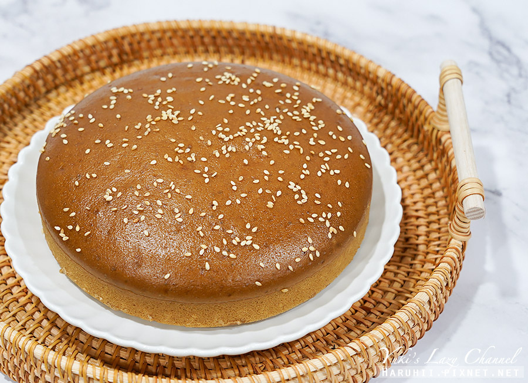
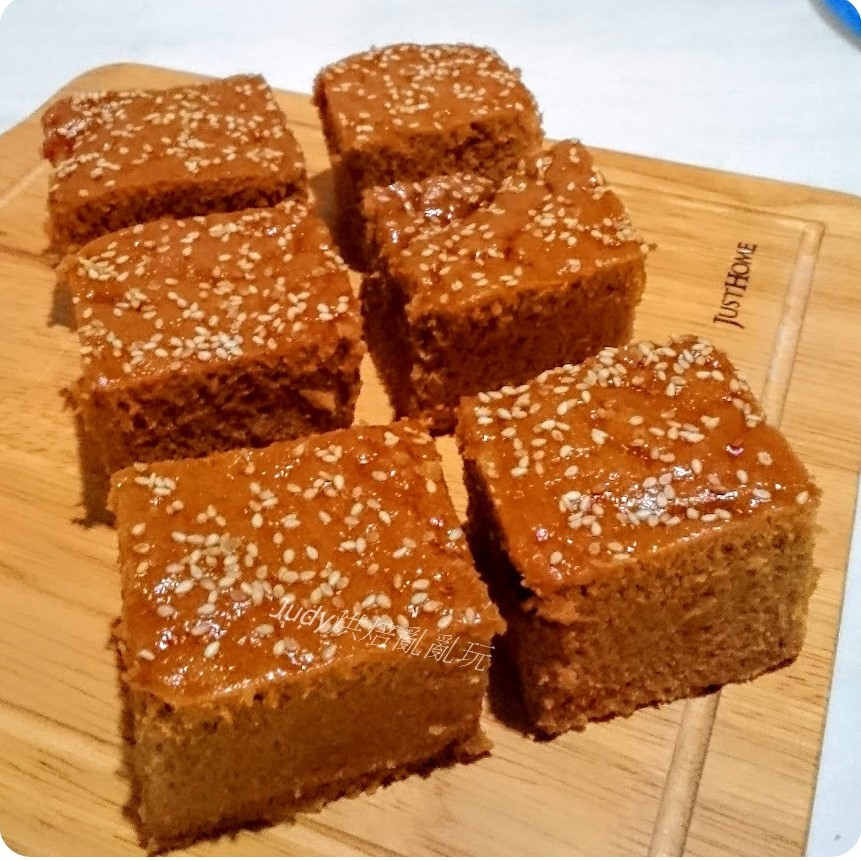
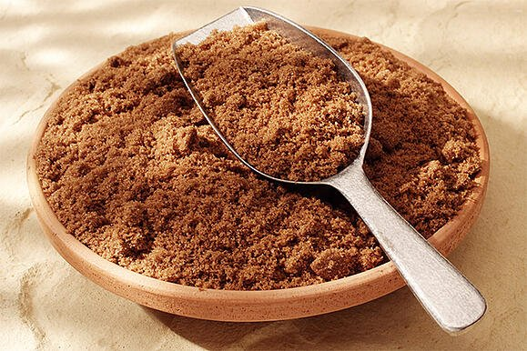

1.由來 黑糖糕在陳氏家族中傳承至今已有四代的歷史，話說黑糖糕的由來，得從日據時代說起。  台灣光復前，澎湖群島進駐了許多琉球人及日本糕餅店。 當時陳拱元父子兩就在日本人開的糕餅店做學徒，因而認識了許多琉球糕餅師父，同時也教陳拱元父子製作琉球糕， 也就是現在風靡全台的黑糖糕。 早期的黑糖糕是用小磁碗作模型，直到台灣光復後， 才有論斤重的圓形黑糖糕。由於黑糖糕是屬於發酵糕點，俗稱發糕→發財， 所以在民風純樸的澎湖人民深信，在廟宇慶典或重要節日時用黑糖糕來祭拜神明或祖先， 可為他們帶來好運及財富，而在當時，全澎湖只有一家在做黑糖糕，那就是源利軒。 為什麼一般拿來做祭拜的供品會成為澎湖名產呢？因為澎湖的就業機會少， 所以有許多年輕人外流至台灣本島工作，有時就會帶上阿嬤拜拜的黑糖糕請同事吃， 久而久之，源利軒的黑糖糕就成了澎湖名產了。 黑糖糕源自日治時期，日本人遷居澎湖於媽宮南甲開設餅舖「丸八」和「水月堂」， 招收當地學徒一同製作日式糕餅，黑糖糕技藝自此傳入澎湖。1945年日治時期結束後， 日本人離開澎湖，澎湖學徒自行開店，並將原琉球式黑糖糕（琉球粿）揉合澎湖糕餅風味改良， 原型類似發粿。黑糖糕最初僅是逢年過節、廟會祭祀用的供品，時移日易，後觀光業興起，因口味獨特， 透過口碑聲名遠播，已經漸漸風靡全台，現為澎湖極具代表性的伴手禮。 2.創辦人和材料  澎湖黑糖糕（臺灣話：oo-thn̂g-kué/ké，漢字：烏糖粿）， 為台灣澎湖縣風味獨特的黑糖製糕點，主要的原料為黑糖、水、低筋麵粉、樹薯粉、泡打粉、小蘇打、沙拉油、白芝麻等， 在日治時期由沖繩的琉球粿（沖繩語：アラガサー）(a u ga se i)加以改良而來，發明人為馬公市糕餅師傅陳克昌。 澎湖糕餅師傅源自於水月堂（店址位於今馬公市民族路和中山路交叉口附近）。 水月堂為日本人所開，專門販賣日式糕餅，陳克昌當時應募進去學習日本餅製作， 同住所附近的琉球人丸八幾經交流，習得琉球粿的作法；此外，陳克昌的父親陳拱元也是糕餅批發商， 而自身也是製作傳統糕餅、壽桃包、中秋餅和上元龜的糕餅師傅，陳克昌可謂博通傳統和日式糕餅的作法。 第二次世界大戰期間，陳克昌暫於日本海軍工作，1945年戰爭結束後，「陳克昌」因此失業，便舊業重操，身兼糕餅師傅與糕餅批發二職， 但因陳克昌綽號「月仔」，店鋪的名稱就叫做「月進堂」，後來陳克昌也開始研發其他糕餅的作法，後世聞名的黑糖糕便是在此時改良出來。 戰後的黑糖糕呈現圓形，原料放入圓碗，再放進日本蒸斗排好蒸熟；現行方形、切割小塊的盒裝黑糖糕，也是1990年代之後為了應景觀光產業、 以便放置包裝盒攜帶才改變的。
3.派系
| 店名 | 創辦人 | 開業時間 | 備註 |
|---|---|---|---|
| 水月堂 | 箴島美津代 | 日治時期 | 父-陳拱元，子-陳克昌為其店鋪學徒。 |
| 丸八 | 丸八 | 日治時期 | 琉球糕餅師傅，與陳克昌是鄰居。 |
| 月進堂 | 陳克昌 | 戰後初期至1974年 | 黑糖糕於此時期改良研發出來。 |
| 水月堂 | 陳春雄 | 1974年夏 | 陳春雄為陳克昌長子。 |
| 水月堂 | 葉玉煉 | 2002年 | 葉玉煉為陳克昌外孫，亦是陳春仁學徒。 |
| 源利軒 | 陳春雄 | 1975年 | 陳春雄為陳克昌長子。 |
| 源利軒 | 陳春雄 | 1975年 | 陳春雄為陳克昌長子。 |
| 春仁 | 陳春仁 | 1993年 | 陳春仁為陳克昌次子，原在源利軒幫忙，後自行獨立開業。 |
| 黑妞 | 鄭龍蛟 | 1994年 | 寰一實業有限公司旗下品牌，鄭龍蛟原為特產代理批發商。 「黑妞黑糖糕」乃鄭龍蛟與糕餅店老師傅自行討論研發而販售的品牌。 |
| 媽宮 | 洪文傳 | 1968年 | 前身為「振裕食品行」旗下品牌。 創辦人洪文傳原為媽宮糕餅興盛派（鹹餅）學徒。 |
| 頂好 | 劉安吉 | 1985年 | 劉安吉以販售鹹餅起家，為媽宮傳統糕餅業興盛派系統後人。 承繼父親劉福銳「福興」招牌後，改名「頂好」。 |
4.食材 黑糖、二砂糖、中筋麵粉、水、樹薯粉、植物油、無鋁泡打粉、蜂蜜、(熟)白芝麻、10人份內鍋、年糕紙 5.黑糖的功效  黑糖是一種未經提煉的純糖， 經研究證實，黑糖具有改善血管硬化的作用，能有效阻止血清中的中性脂肪及胰島素的含量上升。 因此，黑糖具有防止肥胖及改善動脈硬化的功能。 黑糖屬溫補食材， 具有益氣、緩中（指緩和腸胃道不適）、活血散瘀、溫經散寒、緩解疼痛的功效，是中醫養生的食材。
來源(1) 來源(2)